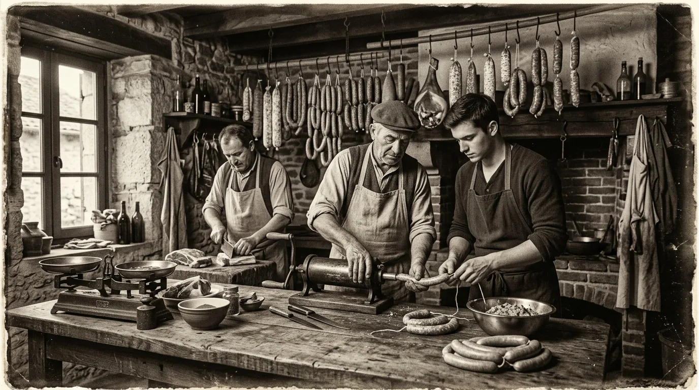

20 anys d'autèntica passió per la graella i la tradició
Des de la nostra obertura l'any 2006 a Marina Port Premià, unint l'herència artesana de la millor xarcuteria tradicional amb la graella viva i la vedella fresca de Girona. Dues dècades de dedicació i passió pel producte ben fet.
Dels inicis de 2006 a l'espai actual a Marina Port Premià
Arrossega el controlador central per descobrir el contrast entre els nostres orígens artesans i el nostre espai gastronòmic actual davant del port.
 sailing
AVUI · Marina Port Premià
sailing
AVUI · Marina Port Premià

history 2006 · Primers InicisEl viatge gastronòmic de John's Grobe
Com vam passar de ser un petit taller artesà de salsitxeria a un referent d'hamburgueses de Girona i graella oberta.
Obertura de John's Grobe a Marina Port Premià
Obrim les nostres portes al port esportiu amb una aposta clara: portar la màxima qualitat en frankfurts tradicionals elaborats amb recepta artesana de Baviera i les primeres hamburgueses a la graella, amb un servei proper i vistes privilegiades al mar.
L'Aposta Radical per la Vedella 100% Girona
Decidim fer un salt de qualitat definitiu: seleccionem exclusivament vedella fresca de ramaders de les comarques de Girona. Carn sense congelar, picada diàriament a la nostra cuina per garantir textura, suculència i el màxim sabor a la brasa.
Ampliació de Terrassa, Cerveses d'Importació & Sense Gluten
Renovem la nostra terrassa davant dels vaixells i incorporem tiradors de cerveses de prestigi internacional (Paulaner, Estrella Damm). A més, introduïm opcions de pa artesà sense gluten perquè tothom pugui gaudir de la nostra oferta gastronòmica.
Celebrant 20 Anys de Trajectòria (2006 - 2026)
Dues dècades després, John's Grobe és un punt de trobada imprescindible al Maresme. Mantenim intacte el nostre compromís: carns de primera, frankfurts d'elaboració autèntica, ambient informal davant del mar i l'afecte de milers de clients que ens acompanyen.
Tres principis innegociables des de 2006
1. El Foc i la Graella
Sense trucs ni acceleradors. La carn es cuina al punt exacte de caramel·lització per preservar tots els sucs naturals i el sabor fumat de la brasa autèntica.
2. Vedella 100% Girona
Treballem exclusivament amb vedella catalana de màxima puresa. Seleccionem les millors peces de múscul sencer per a una picada esponjosa que es fon al paladar.
3. Respecte pel Temps
Creiem en el bon menjar compartit sense presses. Tant si vens a fer un frankfurt ràpid, un menú gourmet o unes canyes veient el mar, l'ofici es nota en cada mos.
Tasta 20 anys d'història i graella
T'esperem a Marina Port Premià per gaudir de la nostra carta completa davant del port esportiu o demanar còmodament a domicili.